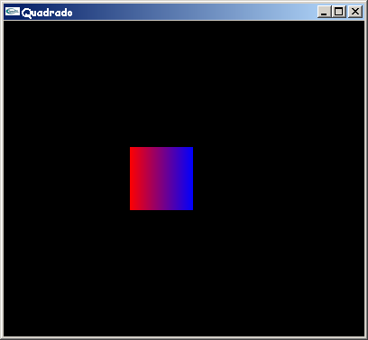
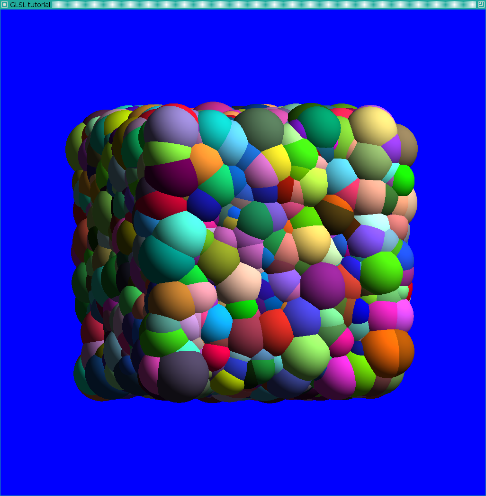
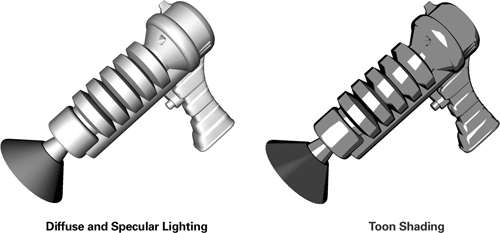
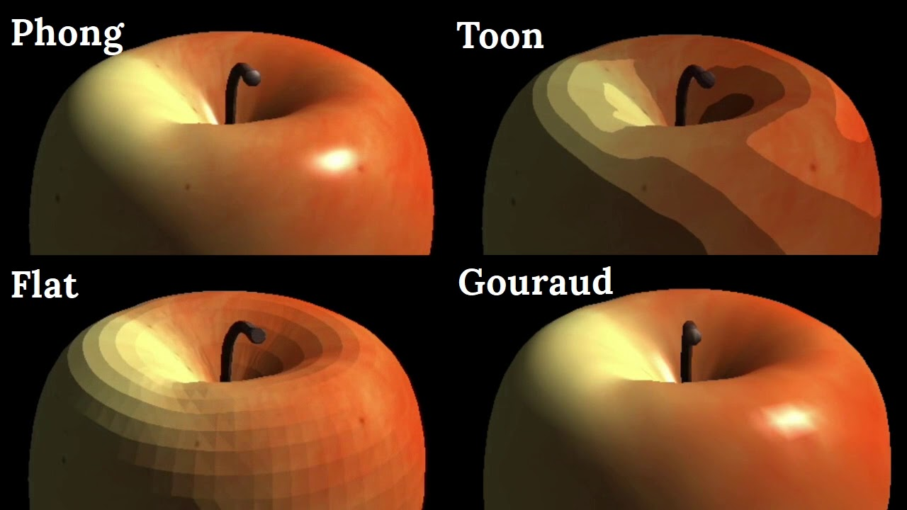

Atividade 1 (O que é Computação Visual?)
Índice de atividadesAo ler o nome da disciplina Computação Visual pensei que a matéria seria sobre como a imagem é gerada e renderizada pelos computadores, sendo que ao final da matéria teria noção de como gerar e manipular imagens com linhas de código, sem auxílio de ferramentas além do compilador.
Atividade 2 (Aplicações de Computação Visual)
Índice de atividadesComputação Gráfica
A Computação Gráfica (CG) é uma área da Ciência da Computação que se dedica ao estudo e desenvolvimento de técnicas e algoritmos para a geração (síntese) de imagens. Esta área está presente em diversos ramos, como no projeto de modelo de automoveis, e nos jogos eletrônicos.1
O ramo dos jogos eletrôncios é um dos maiores usufruidores dos avanços gráficos e de maior aplicação de recursos da computação gráfica. O avanço da CG ao lado do avanço do hardware disponível torna os gráficos destes jogos cada vez mais reais.2
A área Computação Gráfica é vasta, e segue avançando em diversas direções. No campo específico dos jogos digitais, a evolução da CG permite imagens cada vez mais fidedignas, que muitas vezes são levadas ao limite do hardware pelos desenvolvedores, que muitas vezes buscam imagens fotorrealisticas que ajudam a atingir a visão artística do projeto.2
Para Computação Gráfica escolhi falar sobre a subárea de jogos eletrônicos, pois é uma área que gosto muito, e gosto de acompanhar a evolução gráfica de jogos e pesquisando (mesmo que superficialmente) as técnicas utlizadas pelos desenvolvedores.
Processamento de Imagens
No processamento de imagens (PI) as imagens são examindadas e manipuladas por pessoas. Poranto, suas aplicações envolvem pessoas no ciclo, e é necessário entender como funciona o sistema visual humano. Algumas aplicações desta área são: restauração, realce, e compressão.3
A restauração de imagens é o processo de recuperação da aparência original de uma imagem que possui algum grau conhecido (ou estimado) de degradação.3 Tal degradação ocorre, pois as imagens podem ser corrompidas por ruído, pela função de degradação, ou por ambas. Para restaurar a imagem é necessário aplicar um filtro de restauração.4
A restauração de imagens é de extrema importância, visto que a fotografia pode ser um instrumento de memória e conservação de dados e fatos históricos. Portanto, a restauração destes documentos permite a preservação de fragmentos do passado.5
Escolhi abordar a restauração de imagens, pois foi a aplicação mais intessante para mim no contexto de processamento de imagens.
Visão Computacional
Em aplicações de visão computacional (VC) as imagens processadas (saídas) são usadas pelo computador, ou seja, não necessita de pessoas no seu ciclo visual. As imagens são examinadas, manipuladas, e "interpretadas" pelo computador. A VC resultou de desenvolvimentos nas áreas de biologia e exatas atuando em conjunto. Suas aplicações incluem detecção automática de tumores, sistemas de auxílio a neuro-cirurgias, identificação de impressões digitais, e identificação de impressão DNA (DNA fingertips)3
Atravez de tecnologias como o Deep Learning, a visão computacional consegue identificar variações biológicas e forncer diagnósticos, coisa que só era possível utilizando a visão humana. A vantagem é que a visão computacional é muito mais precisa e capaz de identificar fatores que geralmente passam despercebidos quando não são empregadas soluções tecnológicas.6
A visão computacional, sendo auxiliada por outras tecnologias, é capaz de realizar trabalhos que antes eram feitos apenas por huamanos, mas de forma mais precisa. Problemas como analises de imagens médicas podem ser combatidos com auxílio desta área da computação visual
Escolhi abordar a análise de imagens médicas, pois é uma área de extrema importância para a sociedade, e foi a aplicação mais intessante para mim no contexto de Visão Computacional.
Referências
- Artigo "Introdução à Computação Gráfica" - https://www.inf.pucrs.br/manssour/Publicacoes/TutorialSib2006.pdf
- Página "Computação Gráfica e Jogos Digitais" - https://medium.com/@bitsgrupo/computa%C3%A7%C3%A3o-gr%C3%A1fica-e-jogos-digitais-1e15f0febf7c
- Slides da USP "Processamento de Imagens" - https://edisciplinas.usp.br/mod/resource/view.php?id=414515
- Slides da USP "Processamento Digital de Imagens Médicas" - https://edisciplinas.usp.br/mod/resource/view.php?id=2507909
- Artigo "A importância da conservação fotográfica na reconstrução da memória" - https://www.metodista.br/revistas/revistas-cogeime/index.php/COGEIME/article/viewFile/579/525
- Páina do site Aliger - https://aliger.com.br/como-a-visao-computacional-e-o-deep-learning-estao-sendo-usados-nas-aplicacoes-biologicas/
Atividade 3 (Formatos de imagem)
Índice de atividadesO formato de imagem/arquivo PNG foi o escolhido, pois sempre gostei deste formato que possui “fundo” transparente ao invés de branco, ou qualquer outra cor. Este formato consiste em uma assinatura de identificação de 8 bytes, seguido por mais três blocos (chunks) de informação. Cada bloco está de acordo com um tipo especificamente definido de estrutura. Tais blocos carregam suas próprias identificações referentes ao seu formato interno, e são lidos de maneira sequencial, do início ao fim do arquivo/fluxo de dados. Por a leitura ser sequencial, não é necessário procurar por diferentes partes do arquivo utilizando valores de deslocamento (offset values). Isso também torna o PNG (e formatos similares) ideal para uso na rede (network) e para protocolos de transmissão de informação. Apesar de ser um formato de arquivo, é mais preciso pensar no PNG como um fluxo de dados que é capturado e armazenado num arquivo.
O PNG define 4 blocos padrão, chamados de blocos críticos (critical chunks), que deve ser aceito por todos leitores e escritores de PNG. Estes blocos são:
- The header chunk (IHDR) - Este bloco contém informações básicas sobre os dados da imagem, e deve aparecer como o primeiro bloco, e só pode haver um bloco deste tipo num fluxo de dados PNG.
- The palette chunk (PLTE) - Este bloco armazena os dados do mapa de cores (colormap) associados ao dados da imagem. Só esta presente se a imagem usa uma paleta de cores (color palette), e deve aparecer antes do bloco “image data chunk (IDAT)”.
- The image data chunk (IDAT) - Este bloco armazena os dados da imagem em si, e múltiplos blocos deste tipo podem aparecer em um único fluxo de dados, e devem ser armazenados em ordem contígua.
- The image trailer chunk (lEND) - Este bloco deve ser o último, pois marca o fim do arquivo PNG ou o fim do fluxo de dados.
Todos esses blocos devem aparecer em todo fluxo de dados de um PNG, exceto o “The palette chunk (PLTE)”.
Blocos opcionais, chamados de blocos acessórios/opcionais (ancillary chunks), podem ser ignorados por leitores de arquivos PNG, e não devem ser escritos por escritores de arquivos PNG. Porém, ao desconsiderar estes blocos opcionais, o leitor PNG pode não conseguir renderizar a imagem de maneira apropriada, fazendo com que a imagem apareça muito clara, ou muito escura, ou de alguma diferente da concepção original. Por isso, é recomendado usar softwares capazes de interpretar blocos opcionais padrões, em especial o bloco relacionado ao gama (Image Gamma chunk).
Juntos, os blocos críticos e opcionais são chamados de blocos padrões (standard chunks). Os blocos adicionais são chamados de blocos públicos de propósito especial (special-purpose public chunks), que são implementados em menor quantidade para aplicações específicas. A lista destes blocos públicos de propósito especial tende a crescer com o tempo. Também podem haver blocos privados, para armazenar dados que não precisam ser interpretados por outras aplicações.
Referência
MURRAY, James D.; vanRyper, William. Encyclopedia of Graphics File Formats. Sebastopol: O'Reilly & Associates, 1994.
Atividade 4 (GitHub Classroom - AP1)
Índice de atividadesAtividade 5 (GitHub Classroom - AP2)
Índice de atividadesAtividade 6 (GitHub Classroom - AP3)
Índice de atividadesAtividade 7 (GitHub Classroom - AP4)
Índice de atividadesAtividade 8 (APIs gráficas)
Índice de atividadesA API OpenGL é definida como "um programa de interface para hardware gráfico". Na verdade, OpenGL é uma biblioteca de rotinas gráficas e de modelagem, bidimensional (2D) e tridimensional (3D), extremamente portável e rápida. Seu uso é semelhante ao de uma biblioteca C, uma vez que fornece uma série de funcionalidades.1 A maior vantagem desta ferramenta é sua rapidez e sua disponibilidade em sistemas Windows e Linux, pois o concorrente DirectX está presenta apenas no Windows.2
A imagem a direita é o Diagrama do Pipeline de Renderização. As caixas azuis são o estágios de shaders programáveis. O Pipeline de Renderização é iniciado quando a "rendering operation" é realizada/performada. "Rendering operations" exigem a presença de um objeto de matriz de vértices definido corretamente, e um "Program Object" ,ou "Program Pipeline Object", vinculado (linked) que fornece os shaders para os estágios programávies do Pipeline.3
- Vertex Processing
- Cada "vertex" retirado dos arrays de vertex (conforme definido pelo VAO) é acionado por um(acted upon by a) Vertex Shader. Cada Vertex na stream (fluxo) é processado e se torna um output vertex.
- Primitiva opcional "tessellation stages"
- Primitiva opcional de processamento "Geometry Shader". O output é uma sequência de primitivas
- "Vertex Post-Processing", os outputs do estágio anterior são ajustados ou transportados para locais diferentes
- Transformation Feedback
- Primitive Assembly
- "Clipping" primitivo, "perspective divide", "viewport transform to window space"
- "Scan Conversion" e "parameter interpolation" primitivo, que gera um número de "Fragments"
- Um "fragment Shader" processa cada "fragment". Cada "fragment" gera um número de outputs
- "Per-Sample Operations, incluindo, mas não limitado a:
- Scissor Test
- Stencil Test
- Depth Test
- Blending
- Logical Operation
- Write Mask
Para mais informações, acesse o link.3

Por conta das OpenGL Extensions, existem diversas línguagens de shaders suportadas pela API, sendo a GLSL e a SPIR-V apoiadas diretamente pelo OpenGL sem o uso de extensões. A GLSL (OpenGL Shading Language) é a principal linguagem de shaders para o OpenGL, e é uma linguagem aos moldes de C.4
Segue um exemplo de código que renderiza um qudrado na tela. O código foi retirado do tutorial da PUCRS.1
// Quadrado.c - Isabel H. Manssour // Um programa OpenGL simples que desenha um // quadrado em uma janela GLUT. // Este código está baseado no GLRect.c, exemplo // disponível no livro "OpenGL SuperBible", // 2nd Edition, de Richard S. e Wright Jr. #include#include // Função callback chamada para fazer o desenho void Desenha(void) { glMatrixMode(GL_MODELVIEW); glLoadIdentity(); // Limpa a janela de visualização com a cor de fundo especificada glClear(GL_COLOR_BUFFER_BIT); // Especifica que a cor corrente é vermelha // R G B glColor3f(1.0f, 0.0f, 0.0f); // Desenha um quadrado preenchido com a cor corrente glBegin(GL_QUADS); glVertex2i(100,150); glVertex2i(100,100); // Especifica que a cor corrente é azul glColor3f(0.0f, 0.0f, 1.0f); glVertex2i(150,100); glVertex2i(150,150); glEnd(); // Executa os comandos OpenGL glFlush(); } // Inicializa parâmetros de rendering void Inicializa (void) { // Define a cor de fundo da janela de visualização como preta glClearColor(0.0f, 0.0f, 0.0f, 1.0f); } // Função callback chamada quando o tamanho da janela é alterado void AlteraTamanhoJanela(GLsizei w, GLsizei h) { // Evita a divisao por zero if(h == 0) h = 1; // Especifica as dimensões da Viewport glViewport(0, 0, w, h); // Inicializa o sistema de coordenadas glMatrixMode(GL_PROJECTION); glLoadIdentity(); // Estabelece a janela de seleção (left, right, bottom, top) if (w <= h) gluOrtho2D (0.0f, 250.0f, 0.0f, 250.0f*h/w); else gluOrtho2D (0.0f, 250.0f*w/h, 0.0f, 250.0f); } // Programa Principal int main(void) { glutInitDisplayMode(GLUT_SINGLE | GLUT_RGB); glutInitWindowSize(400,350); glutInitWindowPosition(10,10); glutCreateWindow("Quadrado"); glutDisplayFunc(Desenha); glutReshapeFunc(AlteraTamanhoJanela); Inicializa(); glutMainLoop(); }
Segue trecho de código e output de utilização de GLSL para shaders. O código foi retirado do github5 e tem o processo detalhado no README.
#version 120
uniform vec4 viewport;
attribute float R;
varying mat4 VPMTInverse;
varying mat4 VPInverse;
varying vec3 centernormclip;
void main() {
gl_Position = gl_ModelViewProjectionMatrix * gl_Vertex;
gl_FrontColor = gl_Color;
mat4 T = mat4(
1.0, 0.0, 0.0, 0.0,
0.0, 1.0, 0.0, 0.0,
0.0, 0.0, 1.0, 0.0,
gl_Vertex.x/R, gl_Vertex.y/R, gl_Vertex.z/R, 1.0/R);
mat4 PMTt = transpose(gl_ModelViewProjectionMatrix * T);
vec4 r1 = PMTt[0];
vec4 r2 = PMTt[1];
vec4 r4 = PMTt[3];
float r1Dr4T = dot(r1.xyz,r4.xyz)-r1.w*r4.w;
float r1Dr1T = dot(r1.xyz,r1.xyz)-r1.w*r1.w;
float r4Dr4T = dot(r4.xyz,r4.xyz)-r4.w*r4.w;
float r2Dr2T = dot(r2.xyz,r2.xyz)-r2.w*r2.w;
float r2Dr4T = dot(r2.xyz,r4.xyz)-r2.w*r4.w;
gl_Position = vec4(-r1Dr4T, -r2Dr4T, gl_Position.z/gl_Position.w*(-r4Dr4T), -r4Dr4T);
float discriminant_x = r1Dr4T*r1Dr4T-r4Dr4T*r1Dr1T;
float discriminant_y = r2Dr4T*r2Dr4T-r4Dr4T*r2Dr2T;
float screen = max(float(viewport.z), float(viewport.w));
gl_PointSize = sqrt(max(discriminant_x, discriminant_y))*screen/(-r4Dr4T);
// prepare varyings
mat4 TInverse = mat4(
1.0, 0.0, 0.0, 0.0,
0.0, 1.0, 0.0, 0.0,
0.0, 0.0, 1.0, 0.0,
-gl_Vertex.x, -gl_Vertex.y, -gl_Vertex.z, R);
mat4 VInverse = mat4( // TODO: move this one to CPU
2.0/float(viewport.z), 0.0, 0.0, 0.0,
0.0, 2.0/float(viewport.w), 0.0, 0.0,
0.0, 0.0, 2.0/gl_DepthRange.diff, 0.0,
-float(viewport.z+2.0*viewport.x)/float(viewport.z), -float(viewport.w+2.0*viewport.y)/float(viewport.w),
-(gl_DepthRange.near+gl_DepthRange.far)/gl_DepthRange.diff, 1.0);
VPMTInverse = TInverse*gl_ModelViewProjectionMatrixInverse*VInverse;
VPInverse = gl_ProjectionMatrixInverse*VInverse; // TODO: move to CPU
vec4 centerclip = gl_ModelViewMatrix*gl_Vertex;
centernormclip = vec3(centerclip)/centerclip.w;
}

As aplicações OpenGL variam de ferramentas CAD a programas de modelagem usados para criar personagens para o cinema, tal como um dinossauro. Além do desenho de primitivas gráficas, tais como linhas e polígonos, OpenGL dá suporte a iluminação, colorização, mapeamento de textura, transparência, animação, entre muitos outros efeitos especiais.1 Além disso, jogos digitais também utilizam esta API. Segue uma lista de alguns jogos populares que são renderizados com OpenGL: 6
- Age of Empires III
- Alien: Isolation
- Angry Birds
- Assassin's Creed II
- Batman: Arkham Asylum
Referências
- Tutorial da PUCRS "Introdução à OpenGL" - https://www.inf.pucrs.br/~manssour/OpenGL/Tutorial.html
- Texto do TecMundo "O que é OpenGL?" - https://www.tecmundo.com.br/video-game/872-o-que-e-opengl-.htm
- Documentação "Rendering Pipeline Overview" - https://www.khronos.org/opengl/wiki/Rendering_Pipeline_Overview
- Documentação "OpenGL Shading Language" - https://www.khronos.org/opengl/wiki/OpenGL_Shading_Language#:~:text=The%20OpenGL%20Shading%20Language%20(GLSL,is%20a%20C%2Dstyle%20language.
- GitHub com código do GLSL (Linguagem do shader) - https://github.com/ssloy/glsltuto
- Lista de jogos que usam OpenGL - https://www.pcgamingwiki.com/wiki/List_of_OpenGL_games
Atividade 9 (Transformações)
Índice de atividadesPara criar o cubo, é necessário criar 6 faces qudradas, e para isso, 12 triângulos. Então, é necessário definir os índices. O número de índices é 36, pois são 3 índices por triângulo.2
Após isso, o OpenGL buffer é criado, vinculado, preenchido e configurado com as funções padrões (glGenBuffers, glBindBuffer, glBufferData, glVertexAttribPointer), lembrando de passar o número correto de índices (36) que serão desenhados.
Para as cores, é necessário adicionar um atributo. Inicialmente é gerado um array com um RBG por índice. Após isso, o buffer é criado, vinculado, preenchido e configurado igual ao citado anteriormente, e agora o vertex shader tem acesso a esse buffer novo. Após isso basta declarar novamente o fragmentColor no fragment shader.
Ao fazer apenas isso, o cubo pode parecer estranho, pois a profundidade não foi salva no z-buffer. É possível fazer com que o hardware resolva isso com apenas três comandos ( glEnable(GL_DEPTH_TEST); glDepthFunc(GL_LESS); glClear(GL_COLOR_BUFFER_BIT | GL_DEPTH_BUFFER_BIT); ). Com isso, o cubo deve aparecer na tela.
Para realizar a rotação do cubo, é necessário realizar a multiplicação Projection * Translate * Rotate. Os valores de Projection e Translate são constantes, portanto, podem ser definidos fora do loop. A translação é levada para o fundo em 5 unidades1.
Na hora de desenhar, uma matriz model é feita com base na matriz identidade, pois ela é o produto de rotate com a matriz indentidade. Este produto pode ser realizado até 3 vezes por loop, pois é uma multiplicação por eixo (X, Y, Z). Por último, basta multiplicar model por projection e enviar para o shader.
Sabendo disso, é necessário realizar as seguintes alterações no código dado:
- Ajustar o array "vertices" para que contenha 36 vertices (totalizando 12 triangulos)
- Ajustar o array "colors" para os vertices novos
- Criar as constantes "projection e translate" (ainda fora do loop)
- Dentro do loop, atualizar a matriz model
- Atualizar a matriz MVP
- Utilizar as funções que corrigem a profundidade (z-buffer) automaticamente
Referências
- Vídeo "Vídeo 16: OpenGL Moderno - Desenhando o Cubo(único buffer)" - https://www.youtube.com/watch?v=o8Nb3HR4n9c
- Tutorial da opengl "Tutorial 4 : A Colored Cube" - https://www.opengl-tutorial.org/beginners-tutorials/tutorial-4-a-colored-cube/
Atividade 10 (NPR)
Índice de atividadesNPR, ou nonphotorealistic rendering (renderização não fotorrealista), é realizada quando o intuito é de produzir imagens que não se parecem com o mundo real. Este tipo de renderização pode ser feito para que a cor de um objeto represente sua temperatura, ou criar uma imagem de um desenho animado. Um exemplo comum de NPR é o toon shading, que é uma técnica de renderização que sombreia (shades) objetos com cores constantes e bem delineadas, e gera imagens no estilo cartoon, ao invés de fotorrealista.1 Abaixo seguem duas imagens mostrando a diferença visual entre Toon Shading, e um shading padrão, com reflexões difusas e especulares.
Para alcançar o efeito (catoon) acima, a arma é sombreada com apenas três tons: um para regiões difusas brilhantes, outro para regiões difusas escuras e um terceiro para realces especulares. Além disso, há um contorno preto. Uma possibilidade presente ao usar shaders como esse é "transformar" modelos 3d em 2d, pois como o sombreamento não é fotorrealista, a noção de profundidade pode ser alterada, fazendo com que pareça um desenho 2d.
Como exemplificado no parágrafo anterior, para realizar um toon shading é necessário reduzir as variações no sombreamento. Um toon shader deve ter estes três componentes essenciais:
- O sombreamento difuso deve se ser representado por apenas dois valores: um para regiões claras, e outro para regiões escuras
- Realces especulares precisam ser identificados e representados por uma cor, na qual suas intensidades são suficientemente grandes.
- Objetos precisam ser completamente contornados para que se pareçam com um desenho
Um toon shader precisa converter as reflexões difusas de muitos tons de cor em poucos. Como exemplo, pense em uma escala de cor (monocromatica) para cada pixel que vai de 0,0 até 1,0. Uma forma de criar um toon shader é dividir esta escala em duas faixas distintas; por exemplo, pixels com valores entre 0,0 e 0,5 assumiriam o valor 0,2, enquanto o restante assumiria valor 1,0. O resultado seria uma imagem em dois tons, com uma aparência mais cartunesca. Em termos matemáticos, é necessário transformar a função continua que representa os tons em uma função passo (step function). Caso queira, é possível adicionar mais faixas/passos/steps.
Baseando-se nisso, o shader faz com que na parte de relfexão difusa N⋅L o resultado seja classificado como claro ou escuro (isso com limites simples, com apenas duas faixas). Para mapear os valores de N⋅L de um intervalo contínuo para uma função de degrau, basta usar uma texture lookup, usando uma textura 1d para aplicar a função passo.
Para lidar com realces especulares basta fazer a mesma coisa, aplicar uma função passo para que ao invés de existir uma variação gradual na força, cada realce simplesmente continuará exististindo ou sumirá completamente.
Por último, é necessário adicionar contorno nos objetos. Para isso, é preciso achar os pixels nas silhuetas do objetos. Uma forma simples de fazer isto é usando N⋅V como medida, uma vez que N⋅V mede o quão visível uma superficie é do ponto de vista atual. Um ponto no qual N⋅V é próximo de 0 representa a transição de visível para não visível, portanto são pontos na (ou próximos a) silhueta do objeto. Mais uma vez, uma textura 1d aplica a função passo.
Outras técnicas de shading
Outras duas formas de shading são o gouraud e o phong shading, que assim como o toon shading, são usadas para calcular a iluminação e aparência das superfícies em gráficos 3d, são frequemente usadas em renderização em tempo real, e usam as normais das superfícies para calcular a iluminação. Porém, diferente do toon, essas duas técnicas não são NPR, ou seja, elas visam o fotorrealismo.
Como já explicado, o toon shading "simplifica" o processo de de iluminação/sombreamento, criando imagens cartunizadas. Já no Gouraud shading, a iluminação é calculada apenas nos vértices dos modelos, e o restante das cores são criadas através da interpolação; isso gera imagens fotorrealistas com um custo computacional não tão alto.2 Já no phong shading, a iluminação é calculada em cada pixel; isso gera imagens extremamente fotorrealistas, porém requer mais recursos para processamento.3 Segue imagens comparativas destas técnicas.4
Referências
- Trecho do capítulo 9 do livro "The Cg Tutorial" da Nvidia - https://developer.download.nvidia.com/CgTutorial/cg_tutorial_chapter09.html
- Tutorial da geeksforgeeks "Gouraud Shading in Computer Graphics" - https://www.geeksforgeeks.org/gouraud-shading-in-computer-graphics/
- Tutorial da geeksforgeeks "Phong Shading Computer Graphics" - https://www.geeksforgeeks.org/phong-shading-computer-graphics/
- Vídeo "Phong, Gouraud, Flat, and Toon shading in OpenGL" - https://www.youtube.com/watch?app=desktop&v=dHfu3VkoZ5U